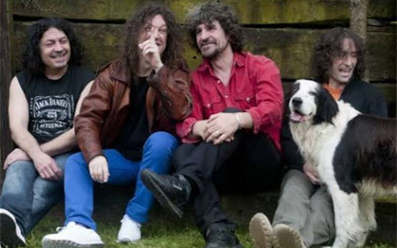
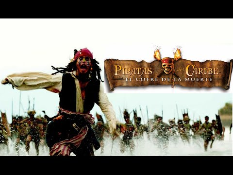

Sobre mí
Formación, experiencia, proyectos, referencias y contacto.
Graduado en Ingeniería Informática del Software, trabajo en Mecalux y estudio el Máster Universitario en Ingeniería Web en la Universidad de Oviedo.
Este es mi sitio web personal: aquí cuento quién soy, mi formación, mi experiencia y mis proyectos, y comparto mis aficiones: la música, el cine, los viajes, el balonmano, los videojuegos y la tecnología.
Formación, experiencia, proyectos, referencias y contacto.

Extremoduro, mi grupo favorito, y el podcast The Wild Project.

Piratas del Caribe: El cofre del hombre muerto, mi película favorita.

Egipto, el destino que más quiero conocer, y cómo me gustaría recorrerlo.
El balonmano, el deporte que más sigo y que he jugado desde pequeño.
Sekiro, el juego de acción que más me ha marcado.
La inteligencia artificial y su papel en el desarrollo web.